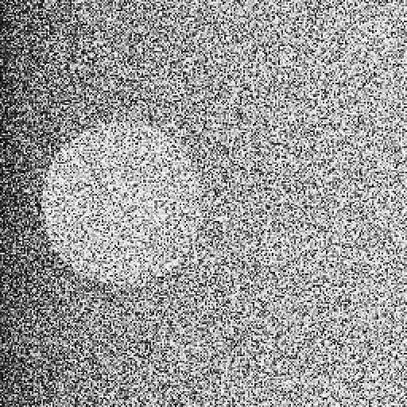
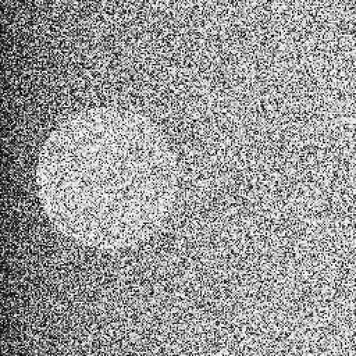

Logan W.
loganw.dev — the top of the record, not the top of a pitch
1Who
I'm Logan. I have worked as a carpenter since I was fifteen, and I have no formal training in computing. From PrettyCloud on, AI agents have written essentially all of the code; gates decide what is true, and the record keeps what they said.1
2Where each project came from
- grew into
- spun out
- underlies
- hosts a port of
- verifies
- was distilled into
- public
- private
- no agent-co-authored commits
- a family, first to last created
The file behind each arrow, and behind each position
- PrettyCloud grew into atlas-darkroom: atlas-darkroom 6a33735 README.md:3 “A print engine for the Atlas of Mathematical Forms”
- PrettyCloud grew into atlas-engine: atlas-engine 867c57a README.md:8 “Sixty-eight plates in PrettyCloud”
- atlas-engine grew into cft-fp256: cft-fp256 77b8440 README.md:421 “The workload this tile exists to serve is [atlas-engine]”
- atlas-engine verifies cft-fp256: cft-fp256 77b8440 README.md:232 “A GPU agrees, bit for bit, on a real workload”
- atlas-engine underlies atlas-darkroom: atlas-darkroom 6a33735 README.md:282 “presentation from PrettyCloud, shape from atlas-engine”
- atlas-darkroom spun out atlas-optical: atlas-optical dbccafe README.md:5 “Extracted whole from atlas-darkroom on 2026-08-28”
- atlas-darkroom spun out atlas-film: atlas-film be1d674 README.md:135 “Born 2026-08-28 by extraction from the darkroom's develop monolith”
- cft-fp256 underlies cft-rebound: cft-rebound 039e3c3 README.md:3 “REBOUND's IAS15 integrator with its arithmetic routed through libcft”
- cft-fp256 underlies Quantum-Film: Quantum-Film a7f02db .gitmodules:2 “vendor/cft-fp256”
- atlas-film underlies Quantum-Film: Quantum-Film a7f02db .gitmodules:5 “vendor/atlas-film”
- cft-fp256 hosts a port of atlas-film: ParcelRound 8767e23 CASE-STUDY-4.md:28 “P2 moves atlas-film”
- cft-rebound was distilled into ParcelRound: cft-rebound 039e3c3 docs/PARCEL-ROUNDS.md:13 “lifted into a standalone repository”
- cft-fp256 was distilled into HonestFramework: HonestFramework 65447fd CASE-STUDY.md:18 “cft-fp256”
- Mercenaries2 grew into Merc2-Mods-Exp: Mercenaries2 e51dcbe README.md:5 “Merc2-Mods-Exp”
Positions, earliest first:
- CanonBracketTool 2025-11-04: GitHub snapshot 2026-09-29 CanonBracketTool: the earliest of 9 commits
- Microscope-Stacker 2025-11-06: GitHub snapshot 2026-09-29 Microscope-Stacker: the earliest of 7 commits
- Mercenaries2 2026-06-27: Mercenaries2 e51dcbe git log the earliest author date of 46 commits
- Merc2-Mods-Exp 2026-06-29: Merc2-Mods-Exp 0ec1db2 git log the earliest author date of 39 commits
- PrettyCloud 2026-07-15: PrettyCloud 5161daa git log the earliest author date of 39 commits
- atlas-darkroom 2026-07-27: atlas-darkroom 6a33735 git log the earliest author date of 1157 commits
- atlas-engine 2026-08-22: atlas-engine 867c57a git log the earliest author date of 84 commits
- atlas-film 2026-08-28: atlas-film be1d674 README.md:135 “2026-08-28”
- atlas-optical 2026-08-28: atlas-optical dbccafe README.md:6 “2026-08-28”
- cft-fp256 2026-08-28: cft-fp256 77b8440 git log the earliest author date of 1079 commits
- cft-rebound 2026-09-09: cft-rebound 039e3c3 git log the earliest author date of 136 commits
- ParcelRound 2026-09-11: ParcelRound 8767e23 git log the earliest author date of 86 commits
- HonestFramework 2026-09-12: HonestFramework 65447fd git log the earliest author date of 4 commits
- Quantum-Film 2026-09-25: Quantum-Film a7f02db git log the earliest author date of 60 commits
3Ledger
| project | what it is | state | last entry | agent-written | check it |
|---|---|---|---|---|---|
| Determinism | |||||
| PrettyCloud | A WebGL2 point-cloud atlas2 | served at prettycloud.io3 | —4 | 33/395 | open it |
| atlas-engine | A language for platonography6 | Sixty-eight of sixty-eight, one hash7 | —8 | 70/849 | cft-fp256's photograph stage, a minute and a half10 |
| cft-fp256 | A math coprocessor that gets the same answer everywhere11 | ABI 0.1512 on main; a revision-7 round is under way off main1 | 2026-09-2913 | 1030/107914 | make verify-quick, ~20 min, 28 of 41 stages15 |
| cft-rebound | REBOUND's IAS15 integrator with its arithmetic routed through libcft16 | At binary64 it is REBOUND's own IAS15 bit for bit17 | 2026-09-1418 | 130/13619 | make check-quick, 5-second warm20 |
| ParcelRound | A method for splitting one body of work across several coding agents at once21 | 422 rounds recorded; METHOD.md last changed 2026-09-1623 | —24 | 86/8625 | case study 4 |
| HonestFramework | A way to lay out a project so that an AI can write nearly all of it and no claim about it ever rests on the AI's judgement26 | ten27 mechanisms, and a gate of its own | —28 | 4/429 | python tools/check_claims.py |
| Film & photography | |||||
| CanonBracketTool | A python based webtool and sdk wrapper for interacting with the Canon SDK to create shot sequences easily and automate shooting.30 | a beginning project, from before the method1 | —31 | 0/932 | repository |
| Microscope-Stacker | A tool for stacking images captured on microscopes at various magnifications and exporting a final combined photo retaining detail at all magnifications in one image.33 | a beginning project, from before the method1 | —34 | 0/735 | repository |
| atlas-darkroom | A print engine for the Atlas of Mathematical Forms36 | private37 | —38 | 1006/115739 | — |
| atlas-optical | The glass of the Eidograph, on its own40 | spun out of atlas-darkroom 2026-08-2841 | —42 | 91/9143 | — |
| atlas-film | The medium of the Eidograph44 | branch pinned at d4007b245, its merge left open46 | —47 | 74/7448 | PROVENANCE.md49 |
| Quantum-Film | Film stocks whose crystals are laid by quantum circuits50 | 1451 runner stages; its ledger's last recorded run: 1352 passed | 2026-09-2653 | 60/6054 | the web demo55 |
| Preservation | |||||
| Mercenaries2 | A revival project for Mercenaries 2: World in Flames56 | online play through refesl.live57 | —58 | 20/4659 | README |
| mercs2-lua-essentials | Ess, the foundational Lua library for Mercenaries 2 modding60 | one of 2261 public mercs2 tools | —62 | 188/21163 | repository |
Each row is read from the repository it names, at the commit in the footer. Last entry: the newest entry in its docs/VALIDATION.md; a dash means it keeps none. Agent-written: commits carrying a Claude or Gemini Co-Authored-By trailer, of all its commits — a trailer, not a line count.
4Check it yourself
Don't trust this page.
- Replay the published conformance vectors64 in your browser. Nothing to install.
make goldenin a clone: the golden model's self-tests65.make verify-quick: ~20 min, 28 of 41 stages15.
6The film thread, in its own prints



Pauli, its Poisson twin and TRI-X67, laid by Quantum-Film at a7f02db. Every print re-developed to the same bits68 when checked.
7Sources
- 1stated - by Logan, 2026-09-29; no file backs it
- 2PrettyCloud 5161daa README.md:3
- 3PrettyCloud 5161daa README.md:12
- 4PrettyCloud 5161daa - no docs/VALIDATION.md at the pin
- 5PrettyCloud 5161daa git log - commits with a Claude or Gemini Co-Authored-By trailer, of all commits
- 6atlas-engine 867c57a README.md:3
- 7atlas-engine 867c57a README.md:176
- 8atlas-engine 867c57a - no docs/VALIDATION.md at the pin
- 9atlas-engine 867c57a git log - commits with a Claude or Gemini Co-Authored-By trailer, of all commits
- 10cft-fp256 77b8440 README.md:239
- 11cft-fp256 77b8440 README.md:3
- 12cft-fp256 77b8440 host/include/cft.h:111 - CFT_ABI_VERSION_MAJOR and _MINOR
- 13cft-fp256 77b8440 docs/VALIDATION.md:15628 - the newest of 152 headings, dated
- 14cft-fp256 77b8440 git log - commits with a Claude or Gemini Co-Authored-By trailer, of all commits
- 15cft-fp256 77b8440 CLAUDE.md:9
- 16cft-rebound 039e3c3 README.md:3
- 17cft-rebound 039e3c3 README.md:22
- 18cft-rebound 039e3c3 docs/VALIDATION.md:3638 - the newest of 37 headings is numbered (37), so the first date in its body
- 19cft-rebound 039e3c3 git log - commits with a Claude or Gemini Co-Authored-By trailer, of all commits
- 20cft-fp256 77b8440 CLAUDE.md:26
- 21ParcelRound 8767e23 README.md:3
- 22ParcelRound 8767e23 ls-tree - CASE-STUDY*.md files at the pin
- 23ParcelRound 8767e23 git log -- METHOD.md - the last commit touching it
- 24ParcelRound 8767e23 - no docs/VALIDATION.md; its case studies are its record
- 25ParcelRound 8767e23 git log - commits with a Claude or Gemini Co-Authored-By trailer, of all commits
- 26HonestFramework 65447fd README.md:3
- 27HonestFramework 65447fd README.md:38
- 28HonestFramework 65447fd - no docs/VALIDATION.md at the pin
- 29HonestFramework 65447fd git log - commits with a Claude or Gemini Co-Authored-By trailer, of all commits
- 30GitHub snapshot 2026-09-29 - CanonBracketTool: its description
- 31GitHub snapshot 2026-09-29 - CanonBracketTool: no docs/VALIDATION.md on its default branch
- 32GitHub snapshot 2026-09-29 - CanonBracketTool: commits with a Claude or Gemini Co-Authored-By trailer, of all commits
- 33GitHub snapshot 2026-09-29 - Microscope-Stacker: its description
- 34GitHub snapshot 2026-09-29 - Microscope-Stacker: no docs/VALIDATION.md on its default branch
- 35GitHub snapshot 2026-09-29 - Microscope-Stacker: commits with a Claude or Gemini Co-Authored-By trailer, of all commits
- 36atlas-darkroom 6a33735 README.md:3
- 37GitHub snapshot 2026-09-29 - atlas-darkroom and atlas-optical: visibility PRIVATE
- 38atlas-darkroom 6a33735 - no docs/VALIDATION.md at the pin
- 39atlas-darkroom 6a33735 git log - commits with a Claude or Gemini Co-Authored-By trailer, of all commits
- 40atlas-optical dbccafe README.md:3
- 41atlas-optical dbccafe README.md:6
- 42atlas-optical dbccafe - no docs/VALIDATION.md at the pin
- 43atlas-optical dbccafe git log - commits with a Claude or Gemini Co-Authored-By trailer, of all commits
- 44atlas-film be1d674 README.md:3
- 45ParcelRound 8767e23 CASE-STUDY-4.md:382
- 46ParcelRound 8767e23 CASE-STUDY-4.md:388 - “Whether atlas-film's pinned merges into its main”
- 47atlas-film be1d674 - no docs/VALIDATION.md at the pin
- 48atlas-film be1d674 git log - commits with a Claude or Gemini Co-Authored-By trailer, of all commits
- 49atlas-film be1d674 - PROVENANCE.md exists at the pin
- 50Quantum-Film a7f02db README.md:3
- 51Quantum-Film a7f02db verify/run.sh - its stage lines, counted
- 52Quantum-Film a7f02db docs/VALIDATION.md:1026 - (the last of 2 matches)
- 53Quantum-Film a7f02db docs/VALIDATION.md:1278 - the newest of 19 headings, dated
- 54Quantum-Film a7f02db git log - commits with a Claude or Gemini Co-Authored-By trailer, of all commits
- 55Quantum-Film a7f02db README.md:75
- 56Mercenaries2 e51dcbe README.md:9
- 57Mercenaries2 e51dcbe README.md:145
- 58Mercenaries2 e51dcbe - no docs/VALIDATION.md at the pin
- 59Mercenaries2 e51dcbe git log - commits with a Claude or Gemini Co-Authored-By trailer, of all commits
- 60mercs2-lua-essentials 3430c0b README.md:3
- 61GitHub snapshot 2026-09-29 - public repositories named mercs2-*, merc2-* or wad-simulator*, other than Merc2-Mods-Exp; created 2026-06-29 to 2026-07-25
- 62mercs2-lua-essentials 3430c0b - no docs/VALIDATION.md at the pin
- 63mercs2-lua-essentials 3430c0b git log - commits with a Claude or Gemini Co-Authored-By trailer, of all commits
- 64cft-fp256 77b8440 README.md:28
- 65cft-fp256 77b8440 README.md:254 - “The golden model's self-tests”
- 66HonestFramework 65447fd CASE-STUDY.md:20 - “atlas-optical”
- 67Quantum-Film a7f02db README.md:30
- 68ParcelRound 8767e23 CASE-STUDY-4.md:213